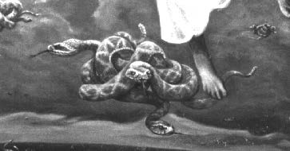

I had a Silver Tool and I was drawing circles that became worlds. My son watched me as I worked.. He said, "Mom, that's cool! Can I use it?" He took the tool from my hand and left in his car. Dream journal entry, 6/3/98
“In the beginning God created the heavens and the Earth”, an ancient testimony to mankind’s creative history proclaimed long ago. Throughout the ages, we have been inspired by these creative forces to imagine a universe of endless possibility. Our ability not only to have original ideas, but to envision complex realms rich with color, sound, and dimension is unfathomable. In emulating the gods, humans have constantly molded and reshaped their world. Through our mind’s eye, we can visit worlds of the past (Darwin), ponder the very nature of the universe (Einstein), and imagine the future (Gene Roddenberry). We wander through beautiful pastoral scenes (Beethoven) and travel hyper-speed through the galaxy (George Lucas). Some visions reveal dazzling worlds of light (van Gogh), while others visit regions terrifying and dark (Stephen King). What is the source of man’s creative spark? Is creativity limited to only a gifted few?
My dream, “The Silver Tool”, came as an answer to questions about my own creative process and ultimately, the power to create we all share.
We all have the power to create worlds upon worlds, for this is what we do every night in our dreams. Creativity is directly linked to the unconscious mind and paying attention to my own dreams is important to me in unlocking my creative potential. The imagination, held in the unconscious mind, is the silver tool in my dream. As a symbol, silver is reflective (a feminine quality), and related to moonlight (that which lights the night, or the unconscious). Creativity and dreaming are thought to be the domain of the right side of the brain, which is also a feminine symbol... fascinating to me, for I only just realized that in my Silver Tool painting is a woman/ creator on the right side of the canvas!
For me, the powerful and unforgettable visual images of my dream paintings have been tools for understanding myself and transforming my waking world. As I paint these surreal landscapes, I re-experience the dream. It is an intense form of dreamwork where unresolved issues of my own psyche—contained in the colors, symbols, and archetypal language—become manifest in my waking experience. For instance, when I was painting a dream with nests of snakes falling from the sky (snakes representing transformation; Sky, my thoughts), I became conscious of reverse transformation, or my slipping back into old, negative thinking patterns.

Another example of the way in which painting my dreams is transforming for me is my first painting “Expansion”, which marked a period of growth for me, spiritually, intellectually and professionally. At that time, I was consumed with a desire to know more and could often be found at the library or at home behind piles of books considering—deeply—topics on questions of life, spirit and mind. Professionally, it was also a stretch for me to take on some public art projects larger in scope than anything I had done before. On the humorous side, when I was painting a herd of buffalo, I became really buffaloed when it seemed I was hopelessly and creatively blocked in waking life.

Creativity is essential to a healthy spirit, so to a person without sufficient outlets for expression, life can feel like a prison and even worse, a sort of walking death. In the years before I worked as an artist, my dreams told me the story of a woman who could fly like a bird but was constantly brought down... either by a storm or by crowds of people who tried to kill her!
Realizing how important my creative space is to me, I allow time every day to paint, write, sculpt, and doodle these images. I make sure I have time to meditate and have some quiet time in nature so that the unconscious is allowed to breathe. I keep track of my dreams in a journal, which in itself becomes a work of art.
It is important for me to remember to actively support my creative energy, otherwise those inventive, imaginative ideas I have will never become manifest. But, imagination is only the first step; then, I must do the work. In the Silver Tool dream, it is a young man (active, doing energy) who takes the creative tool (imagination) from the woman (receptive, receiving energy) and leaves in his car (vehicle of expression).
In my waking reality, this dream has been reflected in a very literal way by my son’s adopting my belief that we can make the worlds we imagine, real. He too, has honored his creative life by actively pursuing education and work as a musician. My son and I used to enjoy countless conversations about human creativity. We would talk for hours about the unfailing creative recipe of taking a vision or idea and applying mental energy in the way of focus or intent, then adding energy from the heart, providing desire and motivation. All of this producing, finally, the physical result. Contemplating the power of this recipe encouraged and inspired us to continue pursuing the dreams we each held dear.
The Silver Tool seems to mirror these conversations and the universal, or collective level of meaning: all creative ideas are held by Universal Mind and have only to be touched by our unconscious minds to initiate the process of becoming real. Everything in our material world was at some time only a thought; in a very magical way, these thoughts become more and more manifest as they move forth from the spiritual, into the mental, the emotional, and finally the physical realm. The four planes of expression are depicted in my painting by four planets: the spiritual as lofty mountains, the mental by a world of complex freeways and connecting streets, the emotional by stampeding horses and the physical by an ever-changing volcanic sphere.
The creative process is an amazing aspect of the human experience. We all have creative ability; we need only to realize and honor that inherent quality. For me, honoring the creative process—individually and collectively—means paying attention to my dreams, allowing quiet time for ideas to surface from the unconscious, and having the freedom to explore and express these ideas. There is great potential in our imagination, just as William Irwin Thompson states in his book Imaginary Landscape, “As webs come out of spiders, or breath forms in frozen air, worlds come out of us.” This is our ‘Power to Create.
Brenda Ferrimani was the attending artist to the “International Conference on the Fantastic in the Arts”, held in Ft. Lauderdale Florida, in the year 2000, and her work was featured in the presentation “2001, Dream Odyssey Art Exhibition: A Closer Look,” by Richard Russo. At the time of writing, she was building a body of work featuring the dreams of women. Her vision is to provide a look into the minds of some of the leading women personalities of our time, to realize what forces have molded and shaped them, what muses guide them, and what demons they have faced in order to become the feminine heroines they are. For more information, see Brenda Ferrimani’s website: brendaferrimanidreamart.com